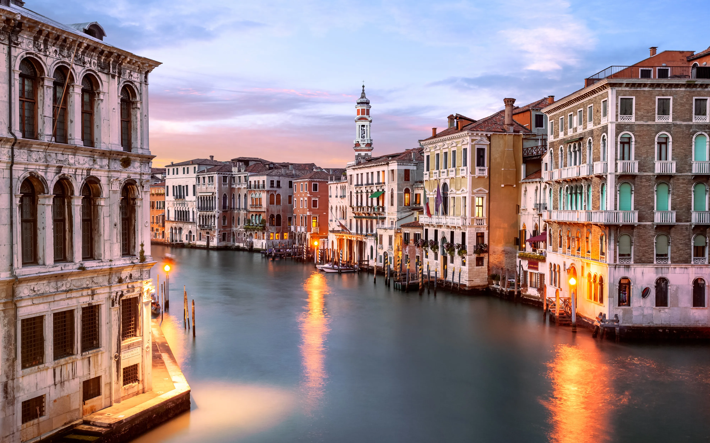

while crowded with tourists and a little smelly in places, is still an amazing place to visit. You need to get yourself lost in all the narrow streets and canals, and enjoy the hospitality of those few locals still left living on the island.
Visit site if you want more of Italy
London was perfect, as we were close enough to train into London for the day, but also had easy access to the M1 and M25. We could easily drive anywhere, and also had a train line passing directly through the town.
Vist site if you want more UK
France in the middle of one of its hottest summers on record when we visited We spent time at the beach in Normandy as well as enjoying plenty of shaded cafes! Mont St Michel This famous old monastery is situated on an island and stands out prominently for miles around.
Vist site if you wan more France